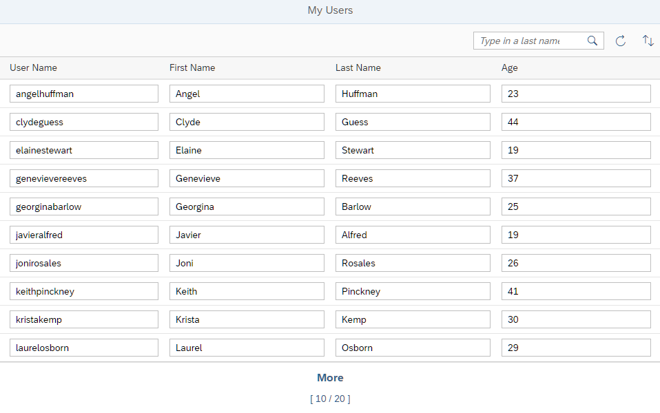

You can view and download all files at OData V4 - Step 5.
...
"": {
"dataSource": "default",
"settings": {
"autoExpandSelect": true,
"operationMode": "Server",
"groupId": "$auto"
}
...In the previous steps, batch processing was turned off, so that we could monitor the
network traffic between our app and the service more easily. Now we turn on batch
processing by changing the groupID to $auto. You
can also just remove the line from the code as this is the default.
We now run the app and open the browser developer tools. On the Console tab, we clear all messages and choose the Refresh button.
Change the settings of the Console so that it only displays information messages, not warnings and errors, to make it easier to find the messages we're looking for.
We see that the request is now bundled: To read the user data, the app now sends a
POST request instead of a GET request to the
server. The URL of the POST request does not include the
path to the data we want. Instead it ends with
$batch that indicates that this is a batch request.
A $batch request uses multipart MIME to put several requests into
one. This makes it harder to analyze when looking at the request in the browser
developer tools. To overcome this issue, you can:
Switch the group ID to $direct temporarily by changing
the source code or changing the default value in the debugger.
Copy the relevant part of the request or response from the developer tools to an editor and auto-format it as JSON to analyze it.